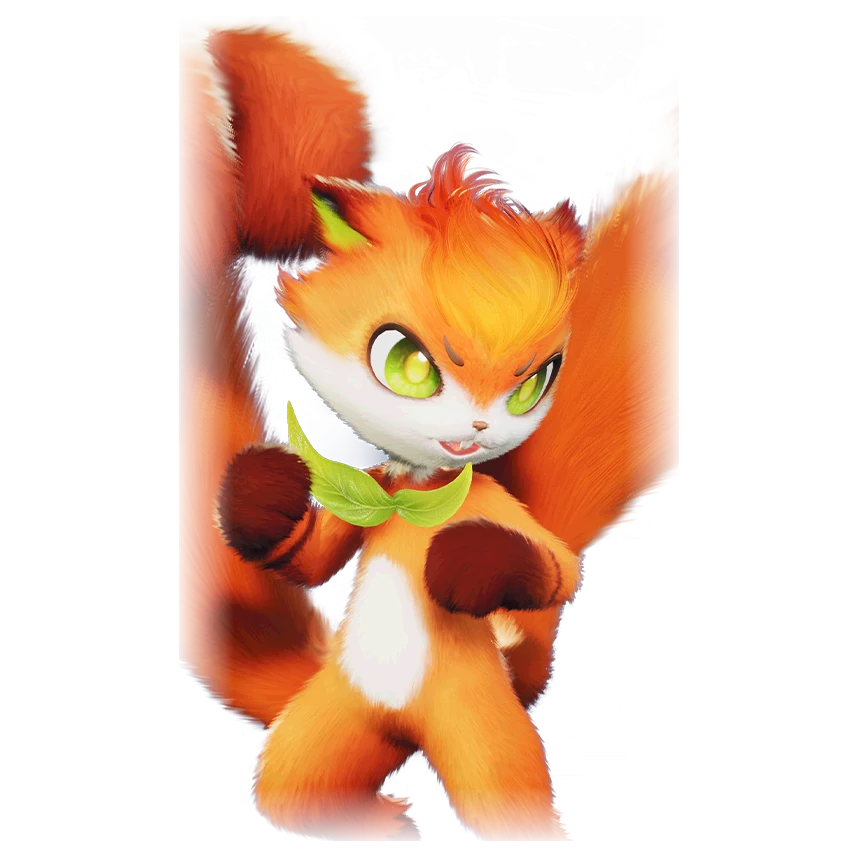

รายชื่อ Aniimo › #048

กระรอกชวนต่อย (Squashel)
#048ธาตุไฟNovaBreakTier A
Squashel มีหางรูปกำปั้นคู่ ทำให้พลังเพิ่มขึ้นมหาศาล ลูกสนที่ขว้างด้วยแรงนั้นพุ่งเหมือนลูกปืนใหญ่ ประมาทไม่ได้เลย
ดูรายละเอียดเต็ม ร่างพิเศษ และร่างเปล่งประกายค่าสถานะพื้นฐาน
| HP | 110 |
|---|---|
| ATK | 82 |
| P.DEF | 80 |
| M.DEF | 80 |
| REGEN | 88 |
| BREAK | 108 |
สกิล
| โจมตีปกติ | ATK ไฟ (BREAK) ใช้พลังไฟโจมตีเป้าหมายระยะประชิด |
| สกิล 1 | Pinecone Bomb ไฟ ขว้างลูกสนติดไฟที่แตกเมื่อกระทบ กระจายเศษลูกสนออกไปอีก 3 ชิ้นทุกทิศ เป้าหมายที่โดนติดเครื่องหมาย [Pinecone] |
| สกิล 2 | Heavy Tail Strike ไฟ ต่อยไปข้างหน้า ถ้าเป้าหมายที่โดนมีเครื่องหมาย [Pinecone] จะใช้เครื่องหมายเพื่อทำดาเมจเพิ่ม 50% ปัดเป้าหมายลอย และติด [Stun] 2.5 วินาที |
| สกิล 3 | Blazing Fist Barrage ไฟ ต่อยไปข้างหน้า 2 ครั้ง ถ้าเป้าหมายมีเครื่องหมาย Pinecone จะใช้เครื่องหมายและเสริมโจมตีปกติครั้งถัดไปเป็น [Punch Rush]: ต่อยรัวไปข้างหน้าต่อเนื่อง ทำดาเมจเท่ากับพลัง 60 |
| อัลติเมต | Blazing Rush ไฟ หางของ Squashel ลุกเป็นไฟ ปลุกเปลวเพลิงพุ่งซ้อนกันจากพื้น ทำดาเมจรุนแรงใส่เป้าหมาย |
สายวิวัฒนาการ
- กระรอกชวนตี → กระรอกชวนต่อย (Aniimo ถึงเลเวล 47)
จุดเกิด
- Blitzwood Lv. 40–45
Held Item ที่แนะนำ
- Gargantuan Horn Aniimo ที่สวมใส่ได้ BREAK เพิ่ม 0.7 ต่อเลเวล
งานใน Homeland
งานธาตุไฟ Lv.2, งานช่าง Lv.2